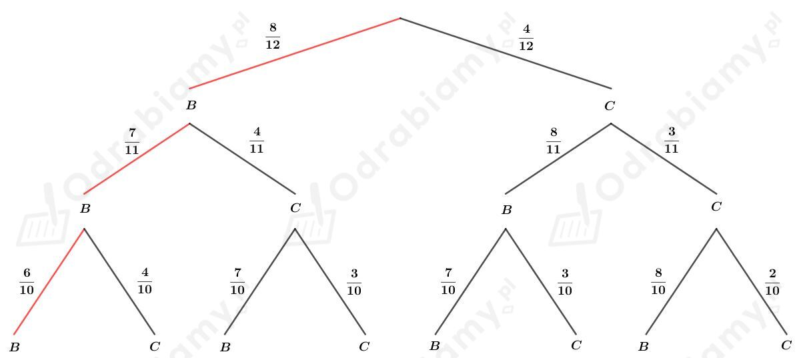
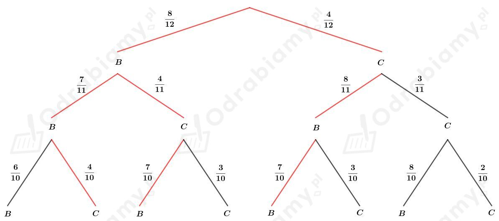
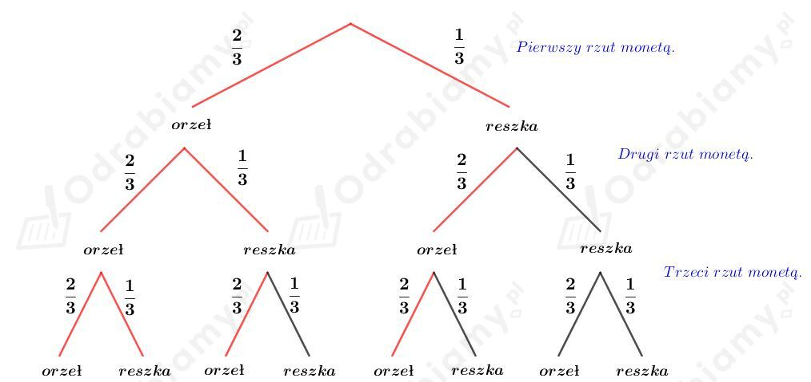
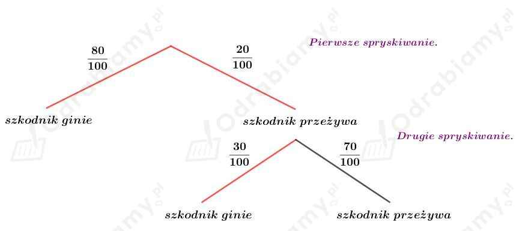

Danych jest sześć urn:
Urna U1: 1 kula biała, 1 kula czarna
Urna U2: 1 kula biała, 2 kule czarne
Urna U3: 1 kula biała, 3 kule czarne
Urna U4: 1 kula biała, 4 kule czarne
Urna U5: 1 kula biała, 5 kul czarnych
Urna U6: 1 kula biała, 6 kul czarnych
Rzucamy kostką i liczba wyrzuconych oczek wskazuje numer urny, z której losujemy kulę, czyli prawdopodobieństwo losowania z każdej urny wynosi 1/6.
Wyznaczmy prawdopodobieństwo wyciągnięcia kuli białej. Mamy:
Odp. Tak, prawdopodobieństwo wyciągnięcia kuli białej jest większe niż 1/4.
Dana jest urna z 8 kulami białymi i 4 czarnymi. Losujemy bez zwracania 3 kule.
a)
Przedstawiamy na drzewie ilustrację tego doświadczenia:

Interesujące gałęzie zaznaczyliśmy na czerwono.
Wyznaczmy prawdopodobieństwo wylosowania samych kul białych. Mamy:
b)
Przedstawiamy na drzewie ilustrację tego doświadczenia:

Interesujące gałęzie zaznaczyliśmy na czerwono.
Wyznaczmy prawdopodobieństwo wylosowania 2 kul białych i 1 kuli czarnej. Mamy:
a)
Dana jest urna U1 z 3 kulami białymi i 7 czarnymi oraz urna U2 z 6 kulami białymi i 4 czarnymi.
Wyznaczmy prawdopodobieństwo wyciągnięcia 3 kul czarnych z pierwszej urny:
Wyznaczmy prawdopodobieństwo wyciągnięcia 3 kul czarnych z drugiej urny:
Wyznaczmy prawdopodobieństwo wyciągnięcia 3 kul czarnych z losowo wybranej urny:
b)
Dana jest urna U1 z 3 kulami czarnymi i 2 białymi oraz urna U2 z 4 kulami czarnymi i 1 białą.
Wyznaczmy prawdopodobieństwo wyciągnięcia różnych kul z pierwszej urny, czyli par kul BC lub CB:
Wyznaczmy prawdopodobieństwo wyciągnięcia różnych kul z drugiej urny, czyli par kul BC lub CB:
Wyznaczmy prawdopodobieństwo wyciągnięcia różnych kul z losowo wybranej urny:
Do każdej z dwóch urn wrzucamy po 10 kul spośród 10 kul białych i 10 kul czarnych.
W I urnie jest n kul białych, zatem w II urnie jest 10-n kul białych.
a)
Wyznaczmy prawdopodobieństwo wylosowania kul białej z losowo wybranej urny. Mamy:
Odp. Niezależnie od rozmieszczenia kul prawdopodobieństwo wylosowania kuli białej wynosi 1/2.
b)
Wyznaczmy prawdopodobieństwo wylosowania dwóch kul białych z losowo wybranej urny. Mamy:
Wyznaczmy największą wartość funkcji f(x)=2x2-20x+90 w przedziale <0, 10>.
Niech W=(p, q) będzie wierzchołkiem paraboli będącej wykresem funkcji f. Korzystając ze wzoru na p mamy:
Wyznaczmy wartości funkcji dla liczb 0, 5 oraz 10. Mamy:
Zatem funkcja f przyjmuje największą wartość dla liczb 0 i 10.
Wnioskujemy z tego, że n=0 lub n=10.
Odp. Prawdopodobieństwo wylosowania dwóch kul białych będzie największe, gdy 10 kul białych umieścimy w jednej urnie.
W rzucie monetą orzeł wypada dwa razy częściej niż reszka. Prawdopodobieństwo wyrzucenia orła wynosi zatem 2/3, a reszki 1/3.
Rzucamy trzykrotnie tą monetą.
Przedstawmy na drzewie ilustrację tego doświadczenia:

Kolorem czerwonym zaznaczono zdarzenia sprzyjające.
Wyznaczmy prawdopodobieństwo tego, że wyrzucimy co najmniej dwa orły w trzykrotnym rzucie taką monetą. Mamy:
Odp. Prawdopodobieństwo tego, że wyrzucimy co najmniej dwa orły wynosi 20/27.
W urnie znajdują się kule białe, niebieskie i zielone. Losujemy jedną kulę z tej urny. Oznaczmy:
A - zdarzenie polegające na tym, że wylosowano kulę białą.
B - zdarzenie polegające na tym, że wylosowano kulę niebieską.
C - zdarzenie polegające na tym, że wylosowano kulę zieloną.
Zdarzenia A, B i C są zdarzeniami rozłącznymi.
Z treści zadania wiemy, że prawdopodobieństwo tego, że wylosowano kulę białą lub niebieską wynosi 3/4. Stąd wyznaczamy prawdopodobieństwo tego, że wylosowano kulę zieloną (czyli ani nie białą, ani nie niebieską) wynosi:
Z treści zadania wiemy, że prawdopodobieństwo tego, że wylosowano kulę niebieską lub zieloną wynosi 4/5. Stąd wyznaczamy prawdopodobieństwo tego, że wylosowano kulę białą (czyli ani nie niebieską, ani nie zieloną) wynosi:
Wyznaczmy prawdopodobieństwo tego, że wylosowana kula jest biała lub zielona. Skoro te zdarzenia A i C są rozłączne, to mamy:
Wyznaczmy prawdopodobieństwo tego, że wylosowana kula jest niebieska. Mamy:
W urnie znajdują się dwie kule białe B1 i B2 oraz cztery kule czarne: C3, C4, C5, C6.
Niech A oznacza zdarzenie polegające na wylosowaniu dwóch kul czarnych (za pierwszym razem wylosowano jedną z czterech kul czarnych spośród sześciu możliwych kul, za drugim razem wylosowano jedną z trzech kul czarnych spośród pięciu możliwych kul). Wyznaczmy prawdopodobieństwo zdarzenia A:
Niech B oznacza zdarzenie polegające na wylosowaniu dwóch kul o numerach nieparzystych. Wyznaczmy prawdopodobieństwo zdarzenia B:
Niech A∩B oznacza zdarzenie polegające na wylosowaniu dwóch kul czarnych o numerach nieparzystych. Najpierw losujemy jedną z dwóch czarnych o nieparzystych numerach z sześciu możliwych a następnie zostaje tylko jedna czarna o numerze nieparzystym z pozostałych pięciu możliwych. Wtedy
Zatem
oraz
Drzewa owocowe spryskano dwukrotnie środkiem ochronnym.
Wykażemy, że prawdopodobieństwo tego, że losowo wybrany szkodnik zginie za pierwszym lub drugim razem jest mniejsze od 0,9.
Przedstawmy na drzewie przebieg doświadczenia:

Interesujące nas gałęzie zaznaczyliśmy na czerwono.
Wyznaczmy prawdopodobieństwo tego, że losowo wybrany szkodnik zginie za pierwszym lub drugim razem. Mamy:
Zatem prawdopodobieństwo tego, że losowo wybrany szkodnik zginie za pierwszym lub drugim razem jest mniejsze od 0,9.
co kończy dowód.